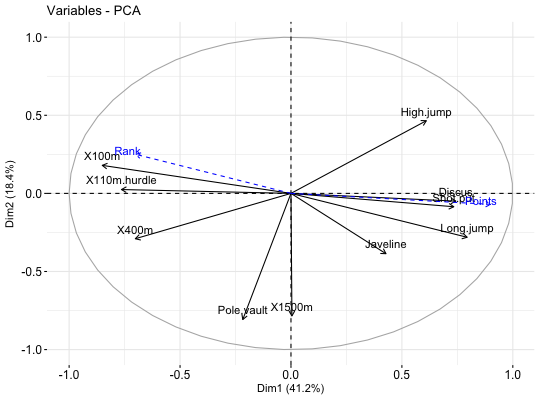

Add supplementary data to a plot
Add supplementary data to a plot
fviz_add(ggp, df, axes = c(1, 2), geom = c("point", "arrow"), color = "blue", addlabel = TRUE, labelsize = 4, pointsize = 2, shape = 19, linetype = "dashed", repel = FALSE, ...)
Arguments
- ggp
- a ggplot2 plot.
- df
- a data frame containing the x and y coordinates
- axes
- a numeric vector of length 2 specifying the components to be plotted.
- geom
- a character specifying the geometry to be used for the graph Allowed values are "point" or "arrow" or "text"
- color
- the color to be used
- addlabel
- a logical value. If TRUE, labels are added
- labelsize
- the size of labels. Default value is 4
- pointsize
- the size of points
- shape
- point shape when geom ="point"
- linetype
- the linetype to be used when geom ="arrow"
- repel
- a boolean, whether to use ggrepel to avoid overplotting text labels or not.
- ...
- Additional arguments, not used
Value
a ggplot2 plot
References
http://www.sthda.com
Examples
# Principal component analysis data(decathlon2) decathlon2.active <- decathlon2[1:23, 1:10] res.pca <- prcomp(decathlon2.active, scale = TRUE) # Visualize variables p <- fviz_pca_var(res.pca) print(p)# Add supplementary variables coord <- data.frame(PC1 = c(-0.7, 0.9), PC2 = c(0.25, -0.07)) rownames(coord) <- c("Rank", "Points") print(coord)#> PC1 PC2 #> Rank -0.7 0.25 #> Points 0.9 -0.07fviz_add(p, coord, color ="blue", geom="arrow")